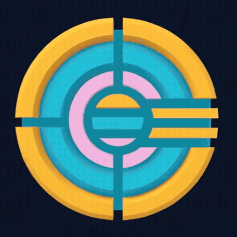

| W A S D | Move |
| Space | Jump |
| Mouse | Look around |
| Left Click | Paint (when in paint mode) / lock pointer |
| V | First-person ↔ Leashed camera |
| R | Reset to spawn |
| P | Toggle paint mode |
| C or Shift | Crouch |
| , . | Brush smaller / larger (paint mode) |
| = ' | Swatch up / down (paint mode) |
| [ ] | Swatch left / right (paint mode) |
| X | Toggle crosshair |
| / | Show / hide this list |
| Alt + P | Save paint to local storage |
| Alt + O | Purge saved paint (forever) |
| Esc | Release pointer / close this |